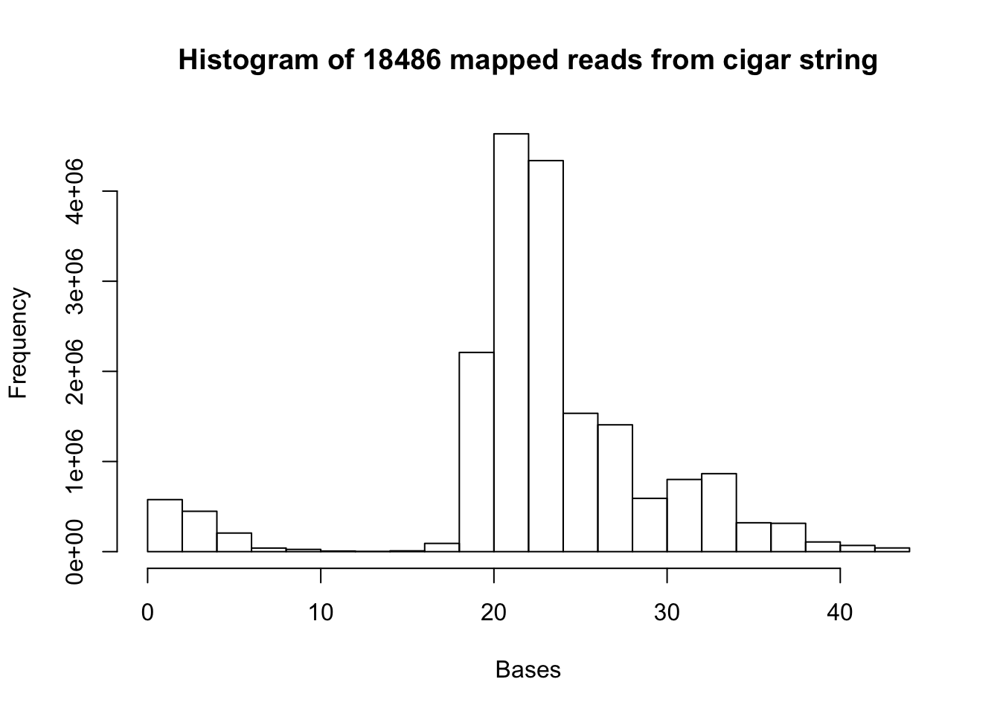
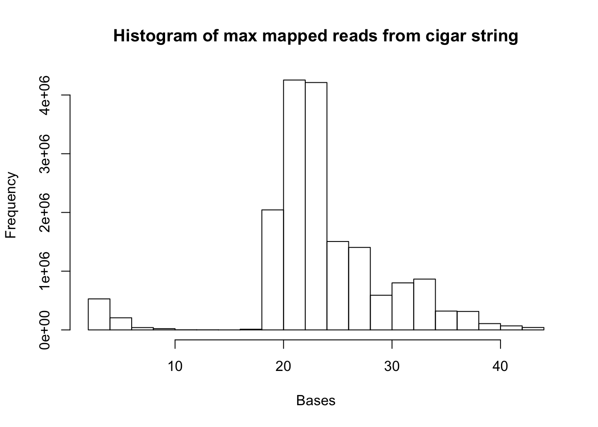
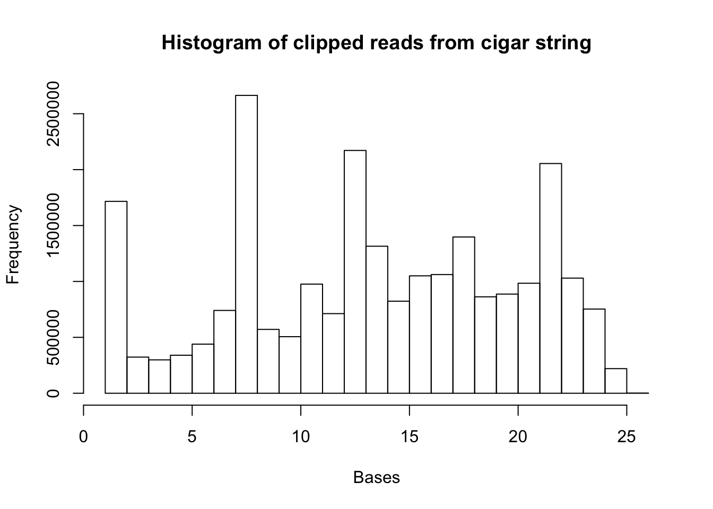
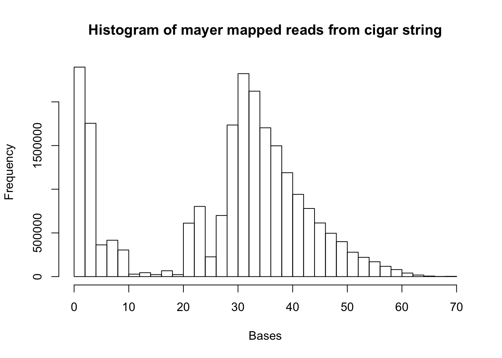
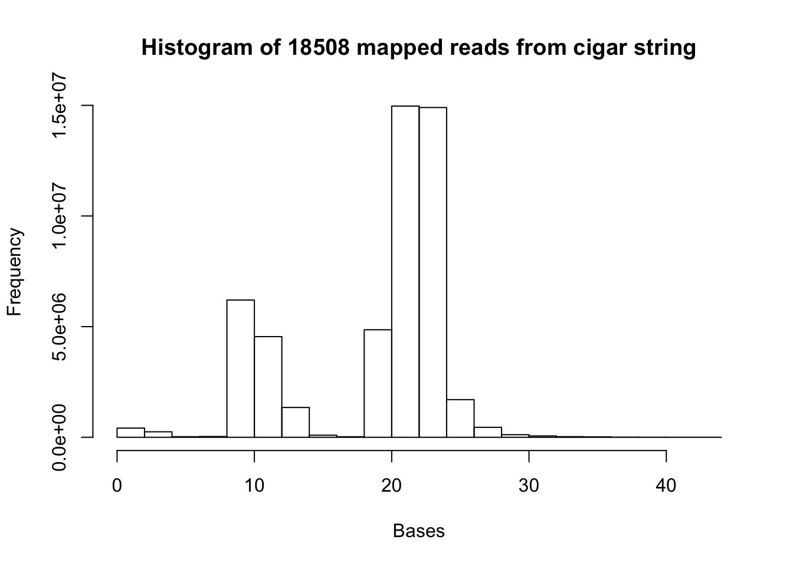
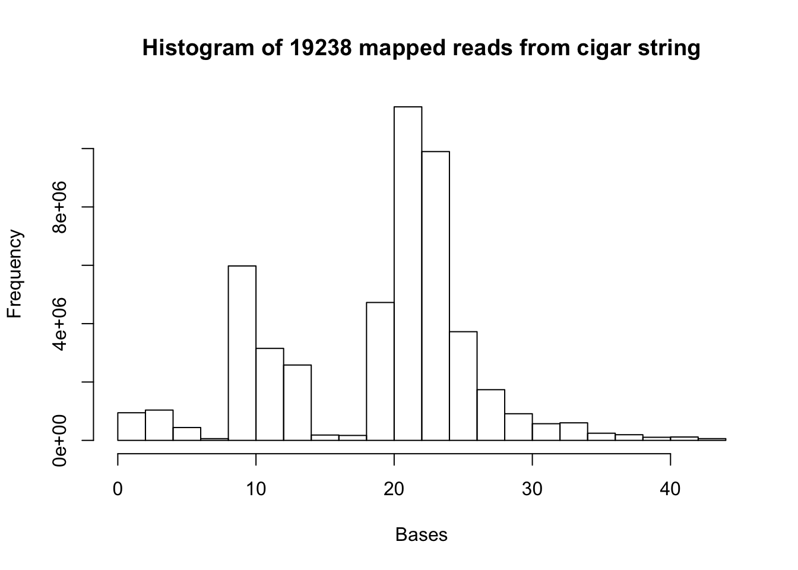
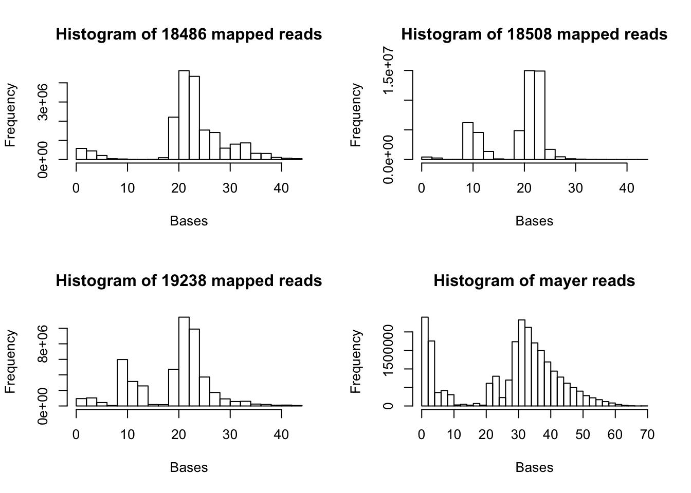
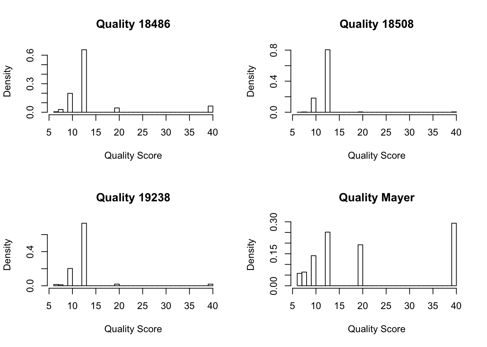

Last updated: 2017-11-18
Code version: affe5d0
Goal: Extract the number of bases that mapped and were soft clipped from bam files and make a histogram
Look first at the original bam files from the snake mapping.
To look at bam files in python, use pysam. I added this to my environment.
Process:
#!/usr/bin/env python
import sys
import pysam
import re
mapped_num = open("mapped_18486_dep.txt", "w")
file_bam_open= open("/project2/gilad/briana/Net-seq/Net-seq1/data/sort/YG-SP-NET1-18486-dep-2017-10-13_S4_R1_001-sort.bam", "r")
file_bam= pysam.AlignmentFile(file_bam_open, "rb")
def get_mapped(file):
mapped=[]
for read in file.fetch():
read= str(read)
cigar= read.split()[5] #python starts at 0
num= re.findall("\d+M", cigar) #this gives me each "##M" in the cigar
for i in num:
mapped.append(i[:-1])
return(mapped)
a= get_mapped(file_bam)
mapped_num.write("\n".join(a))
mapped_num.close()
What I want:
6th column (sep by tab) of the line. ex: 7S23M14S. I want the all the numbers before the M in this string.
Pull the txt file with all the numbers into R and make a histogram.
scp brimittleman@midway2.rcc.uchicago.edu:/project2/gilad/briana/Net-seq/Net-seq1/data/sort/mapped_18486_dep.txt .
mapped=read.csv("../data/mapped_18486_dep.txt", header=FALSE)
map.vec= as.vector(mapped[,1])
a= hist(map.vec, xlab="Bases", main="Histogram of 18486 mapped reads from cigar string")
summary(map.vec) Min. 1st Qu. Median Mean 3rd Qu. Max.
1.00 21.00 23.00 23.16 26.00 44.00 Change the code so I only add the max mapped value from each read to the file. get_mapped_max.py
#!/usr/bin/env python
import sys
import pysam
import re
mapped_num = open("mapped_18486_dep_max.txt", "w")
file_bam_open= open("/project2/gilad/briana/Net-seq/Net-seq1/data/sort/YG-SP-NET1-18486-dep-2017-10-13_S4_R1_001-sort.bam", "r")
file_bam= pysam.AlignmentFile(file_bam_open, "rb")
def get_mapped(file):
mapped=[]
for read in file.fetch():
read=str(read)
cigar= read.split()[5] #python starts at 0
num= re.findall("\d+M", cigar) #this gives me each "##M" in the cigar
m=[]
for i in num:
m.append(i[:-1])
mapped.append(max(m))
return(mapped)
a=get_mapped(file_bam)
mapped_num.write("\n".join(a))
mapped_num.close()mapped.max=read.csv("../data/mapped_18486_dep_max.txt", header=FALSE)
map.vec.max= as.vector(mapped.max[,1])
hist(map.vec.max, xlab="Bases", main="Histogram of max mapped reads from cigar string")
summary(map.vec.max) Min. 1st Qu. Median Mean 3rd Qu. Max.
2.00 22.00 23.00 23.87 27.00 44.00 I will change the code so it looks for the digits before the S in the cigar string.
#!/usr/bin/env python
import sys
import pysam
import re
clip_num = open("clip_18486_dep.txt", "w")
file_bam_open= open("/project2/gilad/briana/Net-seq/Net-seq1/data/sort/YG-SP-NET1-18486-dep-2017-10-13_S4_R1_001-sort.bam", "r")
file_bam= pysam.AlignmentFile(file_bam_open, "rb")
def get_clip(file):
clip=[]
for read in file.fetch():
read= str(read)
cigar= read.split()[5] #python starts at 0
num= re.findall("\d+S", cigar) #this gives me each "##S" in the cigar
for i in num:
clip.append(i[:-1])
return(clip)
c= get_clip(file_bam)
clip_num.write("\n".join(c))
clip_num.close()
clip=read.csv("../data/clip_18486_dep.txt", header=FALSE)
clip.vec= as.vector(clip[,1])
hist(clip.vec, xlab="Bases", main="Histogram of clipped reads from cigar string")
summary(clip.vec) Min. 1st Qu. Median Mean 3rd Qu. Max.
1.00 8.00 14.00 13.85 19.00 26.00 Use the sys.argv[1] command to pass in arguments from the command line. This script will generalize my get_mapped.py
#!/usr/bin/env python
import sys
import pysam
import re
file_name = sys.argv[1]
out_file = sys.argv[2]
#use by passing a sorted bam file, an output text file
mapped_num = open(out_file, "w")
file_bam_open= open(file_name, "r")
file_bam= pysam.AlignmentFile(file_bam_open, "rb")
def get_mapped(file):
out=[]
for read in file.fetch():
read= str(read)
cigar= read.split()[5] #python starts at 0
num= re.findall("\d+M", cigar) #this gives me each "##M" in the cigar
for i in num:
out.append(i[:-1])
return(out)
a= get_mapped(file_bam)
mapped_num.write("\n".join(a))
mapped_num.close()./get_mapped.py /project2/gilad/briana/Net-seq/Net-seq1/data/sort/YG-SP-NET1-18508-dep-2017-10-13_S2_R1_001-sort.bam mapped_18508_dep.txt
./get_mapped.py /project2/gilad/briana/Net-seq/Net-seq1/data/sort/YG-SP-NET1-Unk1_S6_R1_001-sort.bam mapped_19238_dep.txt
/project2/gilad/briana/Net-seq/Net-seq1/data/sort/get_mapped.py /project2/gilad/briana/Net-seq/data/sort/SRR1575922-sort.bam /project2/gilad/briana/Net-seq/data/sort/mapped_mayer.txt mapped_mayer=read.csv("../data/mapped_mayer.txt", header=FALSE)
map.mayer.vec= as.vector(mapped_mayer[,1])
d= hist(map.mayer.vec, xlab="Bases", main="Histogram of mayer mapped reads from cigar string")
summary(map.mayer.vec) Min. 1st Qu. Median Mean 3rd Qu. Max.
1.0 21.0 32.0 28.1 38.0 70.0 mapped_18508=read.csv("../data/mapped_18508_dep.txt", header=FALSE)
map.18508.vec= as.vector(mapped_18508[,1])
b= hist(map.18508.vec, xlab="Bases", main="Histogram of 18508 mapped reads from cigar string")
summary(map.18508.vec) Min. 1st Qu. Median Mean 3rd Qu. Max.
1.00 13.00 22.00 19.21 23.00 44.00 mapped_19238=read.csv("../data/mapped_19238_dep.txt", header=FALSE)
map.19238.vec= as.vector(mapped_19238[,1])
c= hist(map.19238.vec, xlab="Bases", main="Histogram of 19238 mapped reads from cigar string")
summary(map.19238.vec) Min. 1st Qu. Median Mean 3rd Qu. Max.
1.00 13.00 22.00 19.41 23.00 44.00 par(mfrow = c(2,2))
hist(map.vec, xlab="Bases", main="Histogram of 18486 mapped reads")
hist(map.18508.vec, xlab="Bases", main="Histogram of 18508 mapped reads")
hist(map.19238.vec, xlab="Bases", main="Histogram of 19238 mapped reads")
hist(map.mayer.vec, xlab="Bases", main="Histogram of mayer reads")
Example bam line:
700819F:582:HNHYYBCXY:1:2214:10312:72354_TGATCC 0 1 13537 13 19M25S * 0 0 CGGTGTTTGTCATGGGCCTAATTTCGTATGCCGTCTTCTGCTTG IIIIIGIIIIIIIGGIIGIIGGIIGGGIIIIGIIIIIIIGIIII HI:i:1 NH:i:1 NM:i:0
The cigar is column 6. The read is column 10.
import re
cigar= "18S19M7S"
read= "TCTGCAACAGCTGCCCCTGATCTCGTATGCCGTCTTCTGCTTGA"
num_M= re.findall("\d+[SM]", cigar)
num_int= re.split("[SM]", cigar)
num_int= num_int[0:-1]
num_int=list(map(int,num_int))
cum_sum= [sum(num_int[:i]) for i in range(1, len(num_int)+1)]
cum_sum= [0] + cum_sum
split_string= [read[i:j] for i, j in zip(cum_sum[:-1], cum_sum[1:])]
num_all= []
for i in num_M:
if "S" in i:
x= re.findall("\d+", i)
x = int(x[0])
num_all.append(x)
max_S= max(num_all)
for i in range(len(num_M)):
if num_int[i] == max_S:
break
final = split_string[i]#!/usr/bin/env python
import sys
import pysam
import re
file_name = sys.argv[1]
out_file = sys.argv[2]
file_bam_open= open(file_name, "r")
file_bam= pysam.AlignmentFile(file_bam_open, "rb")
softclip_tot = open(out_file, "w")
def soft_clip(file):
out= []
for a in file.fetch():
line=str(a)
cigar= line.split()[5]
read= line.split()[9]
num_M= re.findall("\d+[SM]", cigar)
num_int= re.split("[A-Z]", cigar)
num_int= num_int[0:-1]
num_int=list(map(int,num_int))
cum_sum= [sum(num_int[:i]) for i in range(1, len(num_int)+1)]
cum_sum= [0] + cum_sum
split_string= [read[i:j] for i, j in zip(cum_sum[:-1], cum_sum[1:])]
num_all= []
for i in num_M:
if "S" in i:
x= re.findall("\d+", i)
x = int(x[0])
num_all.append(x)
if len(num_all) != 0:
max_S= max(num_all)
for i in range(len(num_M)):
if num_int[i] == max_S:
break
final = split_string[i]
out.append(final)
return(out)
run= soft_clip(file_bam)
softclip_tot.write("\n".join(run))
softclip_tot.close()
Write bash file to submit this where I input the input bam and output txt.
#!/bin/bash
#SBATCH --job-name=run_get_soft_clip
#SBATCH --time=8:00:00
#SBATCH --partition=broadwl
#SBATCH --mem=20G
#SBATCH --tasks-per-node=4
module load Anaconda3
source activate net-seq
#$1 input file name
#$2 output file
/project2/gilad/briana/Net-seq/Net-seq1/data/sort/get_soft_clip.py $1 $2
Submit for 18486 dep:
sbatch submit_get_soft_clip.sh YG-SP-NET1-18486-dep-2017-10-13_S4_R1_001-sort.bam soft_clip_seq_18486_dep.txt
sbatch submit_get_soft_clip.sh /project2/gilad/briana/Net-seq/data/sort/SRR1575922-sort.bam /project2/gilad/briana/Net-seq/data/sort/soft_clip_mayer.txtComplete and ready to analyze the txt files.
The quality score is in the sorted bam file.
This is column 5 in the bam file.
This script is called get_qual.py This is in /project2/gilad/briana/Net-seq/scripts
Run by passing it the bam file and an output txt file.
#!/usr/bin/env python
import sys
import pysam
import re
file_name = sys.argv[1]
out_file = sys.argv[2]
qual_score = open(out_file, "w")
file_bam_open= open(file_name, "r")
file_bam= pysam.AlignmentFile(file_bam_open, "rb")
def get_qual(file):
out=[]
for read in file.fetch():
read= str(read)
cigar= read.split()[4] #python starts at 0
out.append(cigar)
return(out)
a= get_qual(file_bam)
qual_score.write("\n".join(a))
qual_score.close()
Import data:
qual_18486= read.csv("../data/qual_18486_dep.txt", head=FALSE)
qual_18508= read.csv("../data/qual_18508_dep.txt", head=FALSE)
qual_19238= read.csv("../data/qual_19238_dep.txt", head=FALSE)
qual_mayer= read.csv("../data/qual_mayer.txt", head=FALSE)Look at the summary:
summary(qual_18486) V1
Min. : 6.0
1st Qu.:13.0
Median :13.0
Mean :14.3
3rd Qu.:13.0
Max. :40.0 summary(qual_18508) V1
Min. : 6.00
1st Qu.:13.00
Median :13.00
Mean :12.59
3rd Qu.:13.00
Max. :40.00 summary(qual_19238) V1
Min. : 6.00
1st Qu.:13.00
Median :13.00
Mean :12.88
3rd Qu.:13.00
Max. :40.00 summary(qual_mayer) V1
Min. : 6.00
1st Qu.:10.00
Median :13.00
Mean :21.11
3rd Qu.:40.00
Max. :40.00 Make map quality histograms:
par(mfrow = c(2,2))
hist(as.numeric(qual_18486[,1]), freq=FALSE, main="Quality 18486", xlab="Quality Score")
hist(as.numeric(qual_18508[,1]), freq=FALSE, main="Quality 18508", xlab="Quality Score")
hist(as.numeric(qual_19238[,1]), freq=FALSE, main="Quality 19238", xlab="Quality Score")
hist(as.numeric(qual_mayer[,1]), freq=FALSE, main= "Quality Mayer", xlab="Quality Score")
sessionInfo()R version 3.4.2 (2017-09-28)
Platform: x86_64-apple-darwin15.6.0 (64-bit)
Running under: macOS Sierra 10.12.6
Matrix products: default
BLAS: /Library/Frameworks/R.framework/Versions/3.4/Resources/lib/libRblas.0.dylib
LAPACK: /Library/Frameworks/R.framework/Versions/3.4/Resources/lib/libRlapack.dylib
locale:
[1] en_US.UTF-8/en_US.UTF-8/en_US.UTF-8/C/en_US.UTF-8/en_US.UTF-8
attached base packages:
[1] stats graphics grDevices utils datasets methods base
loaded via a namespace (and not attached):
[1] compiler_3.4.2 backports_1.1.1 magrittr_1.5 rprojroot_1.2
[5] tools_3.4.2 htmltools_0.3.6 yaml_2.1.14 Rcpp_0.12.13
[9] stringi_1.1.5 rmarkdown_1.6 knitr_1.17 git2r_0.19.0
[13] stringr_1.2.0 digest_0.6.12 evaluate_0.10.1This R Markdown site was created with workflowr